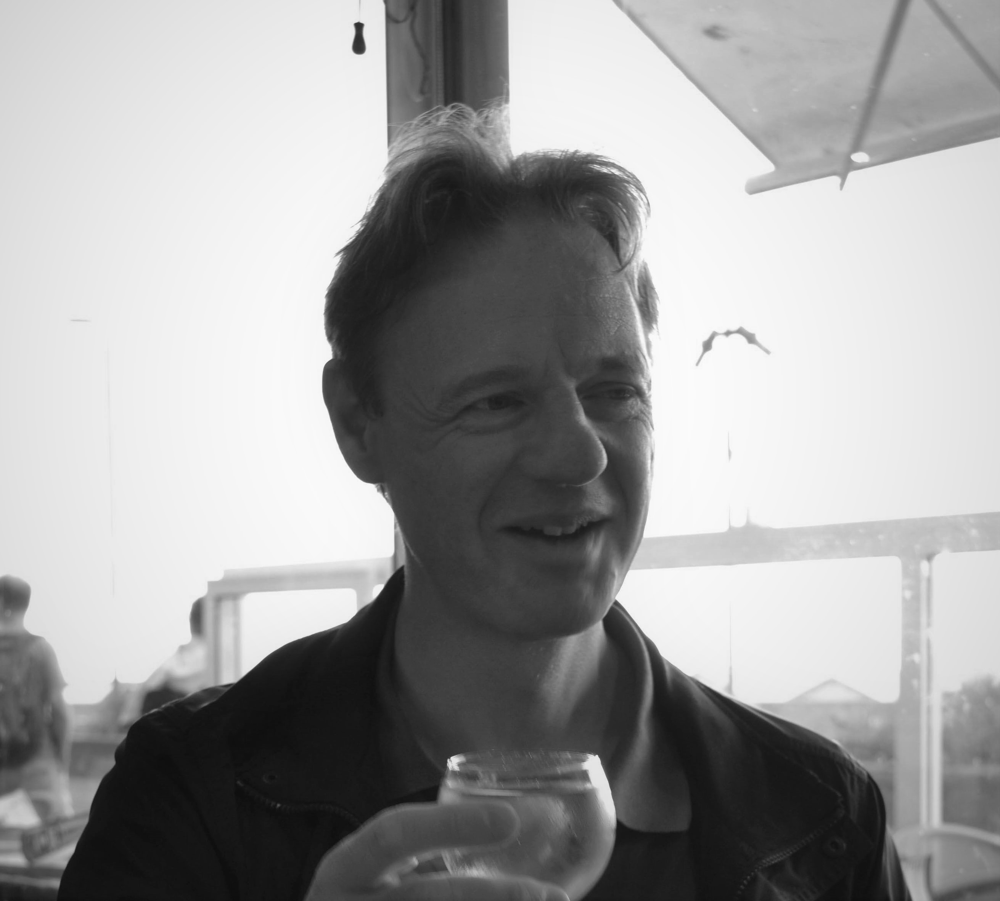

About Me
Steven De Baecke (1969) is a professional Belgian flautist, composer, arranger and music teacher.
He studied the flute with Roland Vanden Berghe, Carlos Bruneel, Gaby Van Riet and Wil Offermans (NL). As a flute player he participated in several orchestras and in many chamber music ensembles. He performed in Belgium, the Nederlands, France, Spain and Japan.
Presently he is a principal member of duo Rigol’Arte (with pianist Bart Vandermeulen): an ensemble that combines music, humor and theatre.

As a composer he studied with Boudewijn Cox, Bart Vanhecke, Johan Sluys, Piet Swerts and Maarten Van Ingelgem. His works feature in different genres : solo, chamber music, choir, orchestra and music theatre. He has written a number of pieces that were chosen as the compulsory work for flute for examinations on several academies of music in Flandres: “After Winter”, “Dream of an Angel”, The Purple Martin”, “Winter Wings”, Dorian Drinking Song”, “The Cove”, “Morning Blue”, “An English Souvenir” and “Oriental Night” all published by Euprint. The piece “Morning Blue” for flute solo is since 2013 one of the works in the list of compulsory pieces for the "Confédération Musicale de France".
In 2019 he won the “VerDi Keurmerk” composition prize with “Graffiti” for flute solo.
He won the international Vlamo composition contest in 2022 with "Horses of the Camargue" for Wind Band.
He is a member of the composers’ association ComAv (Componisten Archipel Vlaanderen)
His sonate for flute and piano has been performend by many professional flute players and was created in 2019 by flutist Carlos Bruneel in the “Muntschouwburg" in Brussels. In his compositions he reflects his passion for different styles and incorporate classical, jazz and modern elements into his music not as an end in itself but as a to tell his musical story.
Since 1991 he has taught at the “Academie De Vonk” in Oud-Heverlee.
He was a former teacher at the Royal Conservatory of Brussels, the “Kunstacademie Eeklo" and the “Hagelandse Academie”.